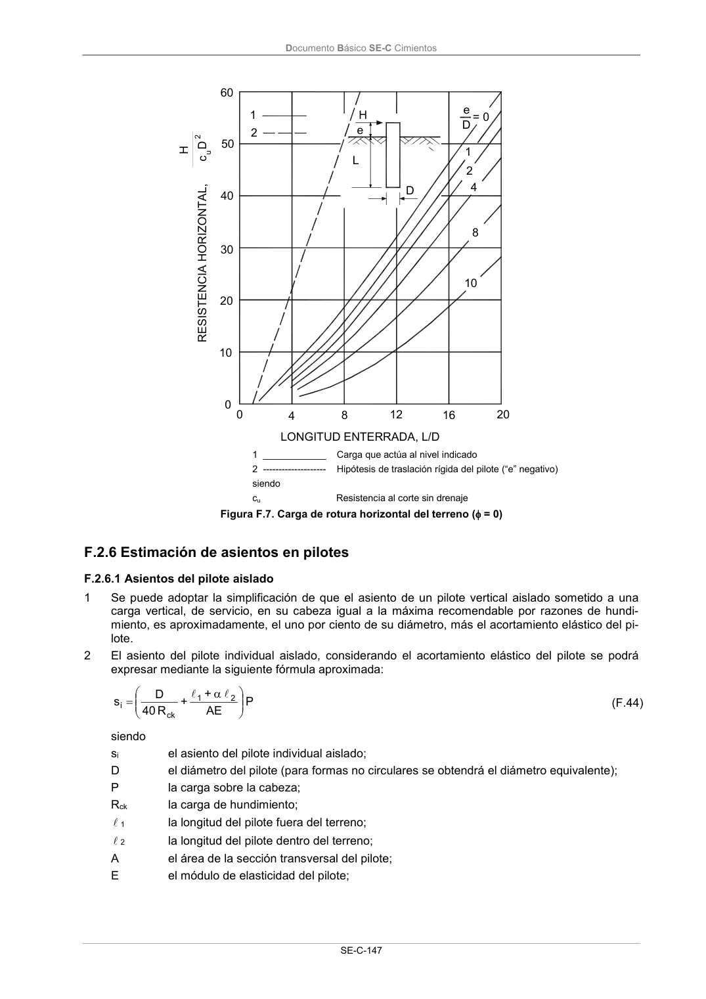

DB-SE-C · Página 152 · versión 2019-12-20
SHA256: a71133f4b0dca253e45ea3071c70f2a512354bcc5cd841bf89b1a502f567ac5e · página física 152 de 165 · métodos de encabezado
solo si están cotejados.
Documento · ← p. 151 · p. 153 →
Formatos: Markdown · JSON de bloques · PDF p. 152 · imagen PNG
Documento Básico SE-C Cimientos SE-C-147 4 8 12 16 20 1 2 4 8 10 e D = 0 60 50 40 10 0 0 D L e LONGITUD ENTERRADA, L/D RESISTENCIA HORIZONTAL, D cu 2 1 2 20 30 H H 1 ____________ Carga que actúa al nivel indicado 2 -------------------- Hipótesis de traslación rígida del pilote (“e” negativo) siendo cu Resistencia al corte sin drenaje Figura F.7. Carga de rotura horizontal del terreno ( = 0) F.2.6 Estimación de asientos en pilotes F.2.6.1 Asientos del pilote aislado 1 Se puede adoptar la simplificación de que el asiento de un pilote vertical aislado sometido a una carga vertical, de servicio, en su cabeza igual a la máxima recomendable por razones de hundi- miento, es aproximadamente, el uno por ciento de su diámetro, más el acortamiento elástico del pi- lote. 2 El asiento del pilote individual aislado, considerando el acortamiento elástico del pilote se podrá expresar mediante la siguiente fórmula aproximada: P AE + + R 40 D s 2 1 ck i l l (F.44) siendo si el asiento del pilote individual aislado; D el diámetro del pilote (para formas no circulares se obtendrá el diámetro equivalente); P la carga sobre la cabeza; Rck la carga de hundimiento; l 1 la longitud del pilote fuera del terreno; l 2 la longitud del pilote dentro del terreno; A el área de la sección transversal del pilote; E el módulo de elasticidad del pilote;
